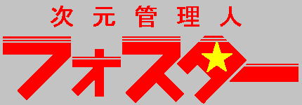

私は次元管理人フォスターだ。
時空に暗躍する犯罪者を追って、今日も過去に未来に飛び回っている。
タイム・パラドックスを引き起こす犯罪者は許せない！
私はタイム・パトロールとして少々の「修正」を権限で認められている。
その時代、位置に相応しくない出来事にはその権限を行使する場合もあり得る。
私のモットーは、「細かいことは気にするな」 だ！
さて、今回の仕事は…

イラスト：カマドウマさん
設定： 真城 悠
第１話 「ＡＧＥ ＯＦ ＩＣＥ ＷＡＬＬ （エイジ・オブ・アイス・ウォール）」（作：真城 悠）
第２話 「ＦＲＩＥＮＤＳ ＯＦ ＰＩＳＳ （フレンズ・オブ・ピス）」（作：真城 悠）
第３話 「ＥＴＥＲＮＡＬ ＤＲＵＧ （エターナル・ドラッグ）」（作：真城 悠）
第４話 「ＩＮＰＥＮＴＩＮＧ ＤＩＳＡＳＴＥＲ （インペンティング・ディザスター）」（作：真城 悠）
第５話 「ＡＮＧＯＲＭＯＡ ＪＵＳＴＩＣＥ （アンゴルモア・ジャスティス）」（作：真城 悠）
第６話 「ＧＯＤＤＥＳＳ ＯＦ ＴＨＥ ＳＵＮ （ゴッデス・オブ・ザ・サン）」（作：七斬）
第７話 「ＳＨＴＴＩＮＧ ＢＥＡＵＴＹ （シッテイング・ビューティー）」（作：七斬）
第８話 「ＦＡＮＴＡＳＩＣ ＲＯＭＡＮＳ(ファンタジック・ロマンス)」（作：七斬）
第９話 「ＮＥＶＥＲＥＮＤＩＮＧ ＪＯＵＲＮＥＹ（ネバーエンディング・ジャーニー ）」（作：七斬）
第１０話 「ＥＸＴＥＮＳＩＯＮ ＬＥＶＥＬ ＥＶＥＮＴ（エクスティンクション・レベル・イベント）」（作：真城 悠）
第１１話 「ＣＯＭＩＣＳ ＯＦ ＧＩＲＬＳ(コミックス・オブ・ガールズ)」（作：クラスター）
第１２話 「Ａ ＢＡＮＫ ＲＯＶＥＲ（ア・バンク・ローバー）」 （作：クラスター）
第１３話 「Ｄｅｌａｙｅｄ Ｂｕｓ（ディレイド・バス） 」（作：かわねぎ）
第１４話 「Ｒａｉｌｉｎｇ Ｄｉｖｉｎｇ（レイリング・ダイビング）」 （作：かわねぎ）
第１５話 「Ｈｅａｖｅｎ Ｅａｒｔｈ Ａｎｄ...（ヘブン・アース・アンド――）」 （作：水谷秋夫）
第１６話 「Ｔｈｅ Ｆｒａｇ ｏｆ Ｓｉｎｃｅｒｉｔｙ（ザ・フラッグ・オブ・シンサーティ）」（作：七斬）
第１７話 「Ｔｈｅ Ｃｏｎｔａｃｔｉｅ（ザ・コンタクティー）」（作：華村天稀）
第１８話 「Ｔｏｍｏｒｒｏｗ ｉｓ Ａｎｏｔｈｅｒ Ｄａｙ（トゥモロー・イズ・アナザー・デイ）」（作：華村天稀）
第１９話 「Ｒａｎｇｅｒ ｏｆ Ｐｏｗｅｒ（レンジャー・オブ・パワー）」（作：高居空）
第２０話 「Ｄａｙ ｏｆ ｔｈｅ Ｕｎｃｏｍｍｏｎ（デイ・オブ・ジ・アンコモン）」（作：高居空）